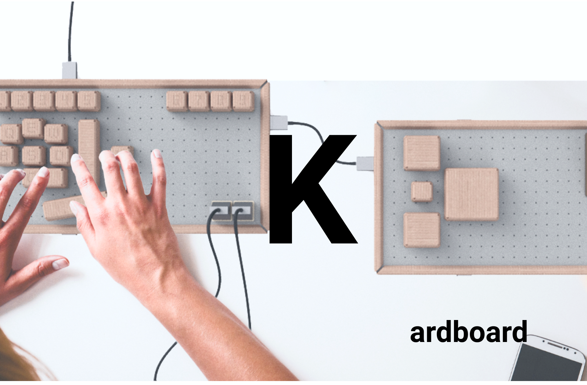
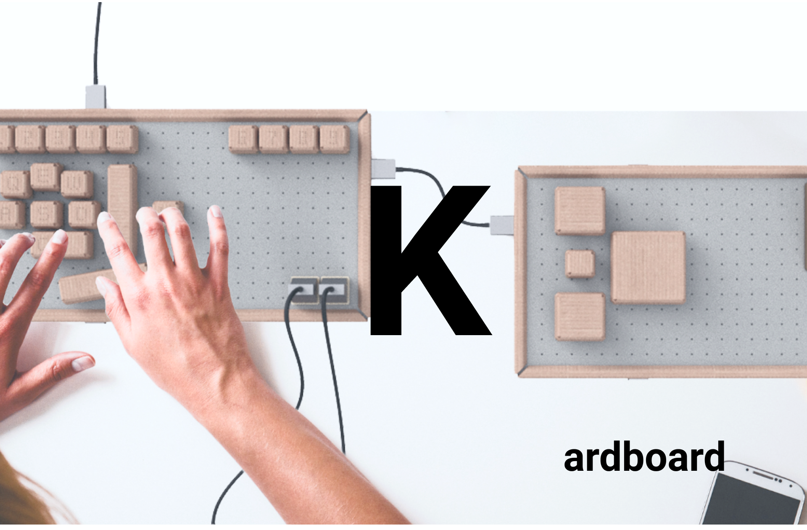

By filling out a SURVEY, you can have your first ever self-customized keyboard shipped to your home！
There are approximatly 130million gamers in the world,
30% of them have certain degrees of limb diabilities or special needs,
they want to keep playing games but failed to find a keyboard that suits their needs.
Most also found that professional gaming keyboards are extremly expensive and
unaccessible.
How to increase video games accessibility and use it as a way to
assit with recovery process is the main gaol of the Kardboard team.
And luckily! we may have an idea
on just what you need!
Inspired by google cardboard: An environmental friendly cardboard keyboard that
can be resembled by anyone according to any needs.